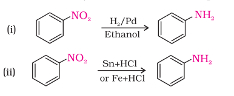
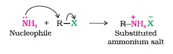
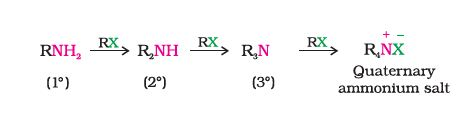
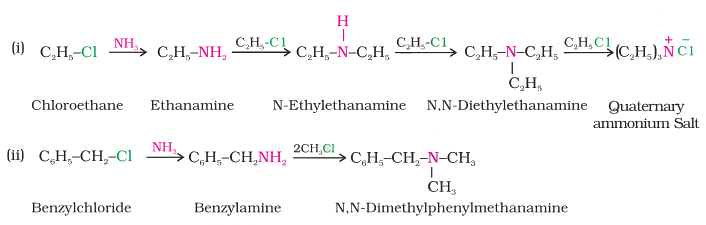
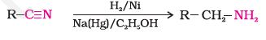
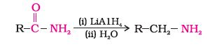
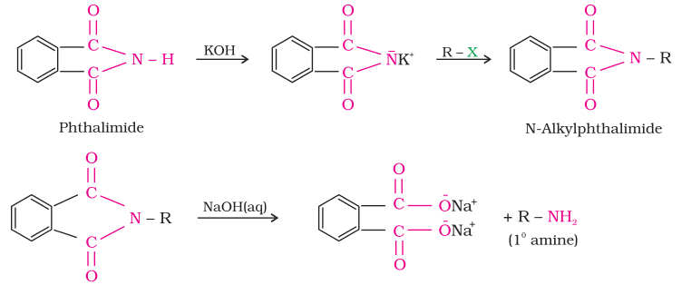
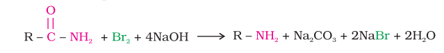

Amines are prepared by the following methods:
Nitro compounds are reduced to amines by passing hydrogen gas in the presence of finely divided nickel, palladium or platinum and also by reduction with metals in acidic medium. Nitroalkanes can also be similarly reduced to the corresponding alkanamines.

Reduction with iron scrap and hydrochloric acid is preferred because FeCl2 formed gets hydrolysed to release hydrochloric acid during the reaction. Thus, only a small amount of hydrochloric acid is required to initiate the reaction.
You have read in the chapter "Haloalkanes and Haloarenes" that the carbon - halogen bond in alkyl or benzyl halides can be easily cleaved by a nucleophile. Hence, an alkyl or benzyl halide on reaction with an ethanolic solution of ammonia undergoes nucleophilic substitution reaction in which the halogen atom is replaced by an amino (–NH2) group. This process of cleavage of the C–X bond by ammonia molecule is known as ammonolysis. The reaction is carried out in a sealed tube at 373 K. The primary amine thus obtained behaves as a nucleophile and can further react with alkyl halide to form secondary and tertiary amines, and finally quaternary ammonium salt.


The free amine can be obtained from the ammonium salt by treatment with a strong base:
Ammonolysis has the disadvantage of yielding a mixture of primary, secondary and tertiary amines and also a quaternary ammonium salt. However, primary amine is obtained as a major product by taking large excess of ammonia.
The order of reactivity of halides with amines is RI > RBr >RCl.Example

Nitriles on reduction with lithium aluminium hydride (LiAlH4) or catalytic hydrogenation produce primary amines. This reaction is used for ascent of amine series, i.e., for preparation of amines containing one carbon atom more than the starting amine.

The amides on reduction with lithium aluminium hydride yield amines.

Gabriel synthesis is used for the preparation of primary amines. Phthalimide on treatment with ethanolic potassium hydroxide forms potassium salt of phthalimide which on heating with alkyl halide followed by alkaline hydrolysis produces the corresponding primary amine. Aromatic primary amines cannot be prepared by this method because aryl halides do not undergo nucleophilic substitution with the anion formed by phthalimide.

Hoffmann developed a method for preparation of primary amines by treating an amide with bromine in an aqueous or ethanolic solution of sodium hydroxide. In this degradation reaction, migration of an alkyl or aryl group takes place from carbonyl carbon of the amide to the nitrogen atom. The amine so formed contains one carbon less than that present in the amide.
